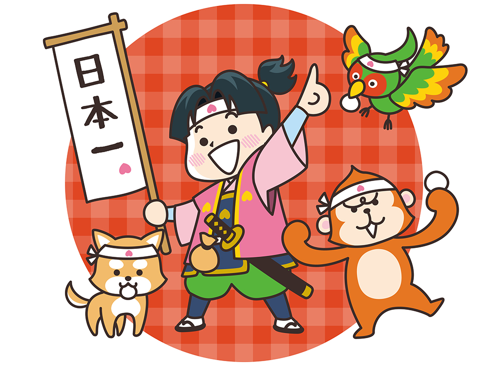
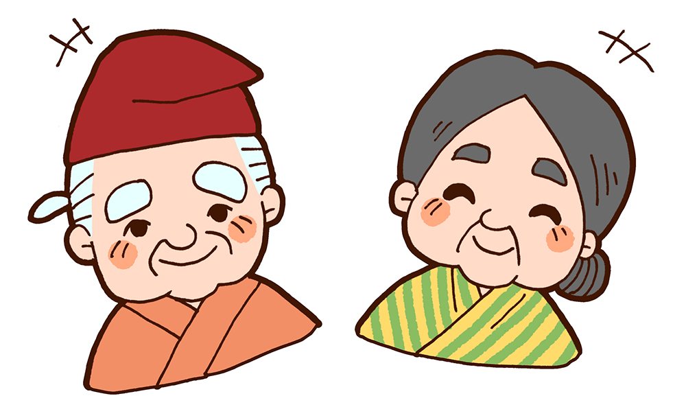
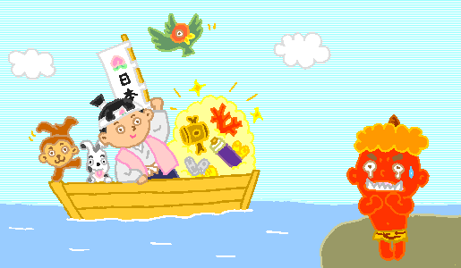
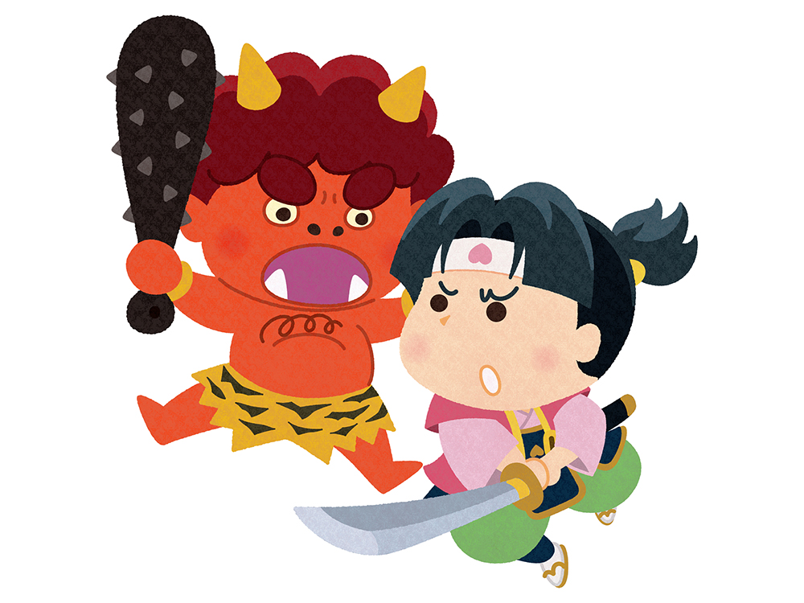
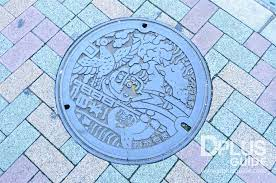

กาลครั้งหนึ่งนานมาแล้ว มีคุณตาคุณยายอาศัยอยู่ด้วยกัน 2 คน ทุกๆ วันหนึ่งคุณตาจะเข้าไปตัดไม้บนภูเขา ส่วนคุณยายจะไปซักผ้าที่แม่น้ำ วันหนึ่ง คุณยายไปซักผ้าตามปกติและพบลูกท้อผลใหญ่ลอยแม่น้ำมา คุณยายจึงนำลูกท้อกลับบ้านไปฝากคุณตา

เมื่อทั้งสองผ่าลูกท้อหมายจะกินก็พบกับทารกคนหนึ่งอยู่ด้านใน คุณตาคุณยายดีใจมาก คิดว่าเทพเจ้าส่งเด็กชายมาให้ ทั้งสองตั้งชื่อเด็กชายคนนั้นว่า “โมโมทาโร่” โดยโมโมะแปลว่าลูกท้อ และทาโร่คือชื่อที่นิยมตั้งให้เด็กผู้ชาย
คุณตากับคุณยายเลี้ยงดูโมโมทาโร่อย่างเอาใจใส่จนเติบโตเป็นเด็กชายที่แข็งแรงและมีพละกำลังมาก ขณะเดียวกันก็มีจิตใจดีและกตัญญูอยู่มาวันหนึ่ง โมโมทาโร่ได้ยินเรื่องเกี่ยวกับยักษ์นิสัยไม่ดีบนเกาะโอนิกาชิมะที่เที่ยวมาแย่งชิงสมบัติของชาวบ้าน โมโมทาโร่จึงขอคุณตากับคุณยายไปปราบยักษ์ คุณยายจึงทำคิบิดังโงะเป็นเสบียงพกไประหว่างเดินทาง

ระหว่างทาง โมโมทาโร่ได้พบกับสุนัข ลิง และไก่ฟ้า โมโมทาโร่บอกว่านี่คือคิบิดังโงะที่อร่อยที่สุดในญี่ปุ่นและให้คิบิดังโงะกับสัตว์ทุกตัว ทั้งสามจึงติดตามโมโมทาโร่ไปเกาะยักษ์ด้วย เมื่อมาถึงเกาะยักษ์ โมโมทาโร่และผองเพื่อเข้าต่อสู้กับยักษ์ ยักษ์สู้พละกำลังของโมโมทาโร่ไม่ได้จึงยอมแพ้และมอบสมบัติที่ชิงมาให้เพื่อขอชีวิต โมโมทาโร่จึงนำสมบัติกลับบ้านได้โดยสวัสดิภาพ


ฝาท่อมาจากเมืองแห่งตำนานโมโมทาโร่ โอคายาม่า (Okayama) จังหวัดโอคายาม่า (Okayama) ภูมิภาคจูโงะกุ